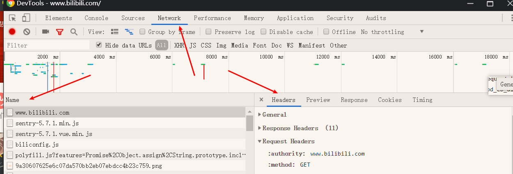

1.https://www.xp.cn/download.html
2.黑马程序员-视频库：http://yun.itheima.com/?hm
- 从这个网站收到的视频资源，已经存入了自己的百度网盘：链接
2020-10-4 18:56:09
3.https://www.bilibili.com/video/BV1ji4y1876Y/?spm_id_from=333.788.videocard.0
- 黑马web前后端交互 Ajax
- 这个视频有ppt；
- 但没目前没有PPT资料；
- 2020-10-5 00:33:06
4.B站黑马程序员官方：https://www.bilibili.com/video/BV1ox411M7P2?from=search&seid=11294797197276371476
- 但和黑马程序员视频库的不一样
5.
1. 尚硅谷
1. 第1章：原生 AJAX
1.1 AJAX 简介
AJAX 全称为 Asynchronous JavaScript And XML，就是异步的 JS 和 XML。
通过 AJAX 可以在浏览器中向服务器发送异步请求，最大的优势：无刷新获取数据。
AJAX 不是新的编程语言，而是一种将现有的标准组合在一起使用的新方式。
1.2 XML 简介 已被json取代
1.XML 可扩展标记语言。
2.XML 被设计用来传输和存储数据。
3.XML 和 HTML 类似，不同的是 HTML 中都是预定义标签，而 XML 中没有预定义标签，全都是自定义标签，用来表示一些数据。
4.比如说我有一个学生数据：
name = "孙悟空" ; age = 18 ; gender = "男" ;
5.用 XML 表示:
1 | <student> |
6.现在已经被 JSON 取代了。
用 JSON 表示：
{“name”:”孙悟空”,”age”:18,”gender”:”男”}
1.3 AJAX的特点
0.优点
1.可以无需刷新页面而与服务器进行通信。
2.允许你根据用户事件来更新部分页面内容。
0.2 缺点
1) 没有浏览历史，不能回退
2) 存在跨域问题(同源)
3) SEO 不友好
搜索引擎优化不好。
https://www.bilibili.com/video/BV1WC4y1b78y?p=4&spm_id_from=pageDriver
视频还说了，为什么不好；2021-3-17 19:34:09
1.4 AJAX 的使用
1.AJAX-HTTP协议请求报文与响应文本结构
https://www.bilibili.com/video/BV1WC4y1b78y?p=5&spm_id_from=pageDriver
1.HTTP
2.请求报文
重点是格式与参数
行：get，post等 + url + HTTP/1.1 (1.2 2.0等，视频里说，最多的是1.1)
头；格式；名字+：+空格+值
Host: atguigu.com
Cookie: name=guigu
Content-type: application/x-www-form-urlencoded
User-Agent: chrome 83
(不过我看不懂，2021-3-17 19:49:46)
空行 ；这个是固定的；
体；行是get的话，请求体是空的，行是post的话，请求体可以不为空
username=admin&password=admin；
3.响应报文
2. AJAX-Chrome网络控制台查看通信报文
1.打开F12，选择Networ，如果没有内容，就刷新一下，或者CTRL+R；
- 当前网页的所有请求，都会在network[^1]显示；

2.重点，先看Headers[^2]，和，Response[^3]
3.在Headers，里，重点看：Response Headers，与 Request Headers
https://www.bilibili.com/video/BV1WC4y1b78y?p=6&spm_id_from=pageDriver
02:04
4.
打卡；下班卡；2021-3-17 20:22:37
X. 题注
[^1]:network 英 [ˈnetwɜːk] 美 [ˈnetwɜːrk]
n.网络;网状系统;关系网;人际网;相互关系(或配合)的系统;(互联)网络
v.将…连接成网络;联播;建立工作关系
[^2]:headers 英 [ˈhɛdəz] 美 [ˈhɛdərz]
n.用头顶球;头球;(计算机打印时自动加在各页顶端的)标头，首标
header的复数
[^3]:response 英 [rɪˈspɒns] 美 [rɪˈspɑːns]
n.(口头的或书面的)回答，答复;反应;响应;(礼拜仪式中的)答唱咏，启应经
[^4]:request 英 [rɪˈkwest] 美 [rɪˈkwest]
n.(正式或礼貌的)要求，请求;要求的事
v.(正式或礼貌地)请求，要求